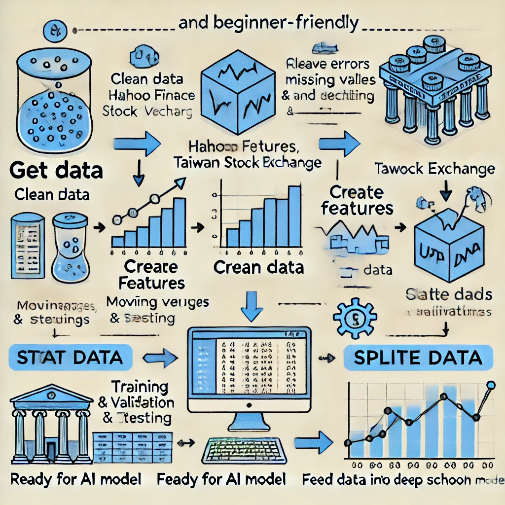
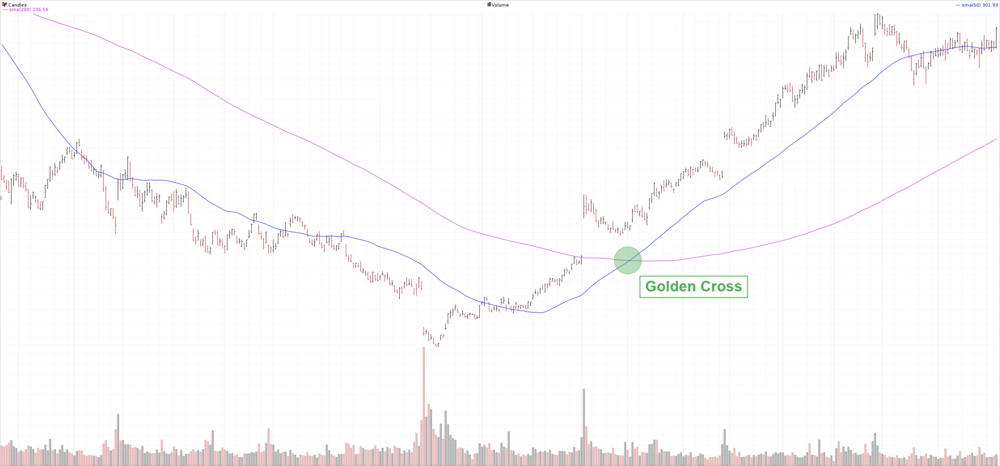

研究概述
本研究旨在探討如何運用深度學習技術來辨識並預測台灣股市與美國股市的移動平均線（均線）趨勢，包括預測均線數值、趨勢方向，以及技術分析訊號（如突破與黃金交叉）的識別。透過建構不同的深度學習模型並進行比較，我們期望確認此方法對於抓取市場趨勢的有效性，並作為投資決策的輔助工具。
研究範圍
- 目標市場：台股與美股
- 資料來源：Yahoo Finance、台灣證券交易所
- 預測目標：
- 預測未來 5 日均線價格
- 預測趨勢方向（上漲、下跌、震盪）
- 辨識突破訊號與黃金交叉
- 模型選擇：比較 LSTM、CNN、Transformer 等深度學習模型
- 評估方法：RMSE（均方根誤差）、分類準確率
- 應用場景：作為投資決策輔助工具
資料收集與前處理
從公開金融數據來源獲取歷史資料，例如透過 Yahoo Finance API 下載美股歷史日價量資訊，或從臺灣證券交易所取得台股日收盤價和成交量等資料。資料期間涵蓋多個年度，以確保包含各種市場狀況（多頭、空頭、市場震盪）。
資料清理流程
- 處理缺失值與異常值
- 處理非交易日（週末、假日）
- 解決跨市場資料（台股、美股）日期對齊問題
特徵工程
- 計算不同周期的移動平均線（5日、20日、60日均線）
- 將未來5日均線作為預測目標
- 根據均線斜率或未來價格變化率標記趨勢方向
資料切分
將整理好的資料依時間先後劃分為訓練集、驗證集和測試集。由於金融時間序列具有時序相關性，避免隨機洗牌，以確保未來數據不洩漏到過去的訓練中。

這張圖展示了股票數據處理的簡單流程：從 Yahoo Finance 或台灣證券交易所取得數據，清理錯誤與缺失值，計算移動平均線等特徵，標記未來趨勢（上漲、下跌、穩定），將數據分割為訓練集、驗證集和測試集，最後準備好數據供 AI 進行學習與預測，幫助更準確地預測股票市場趨勢。
深度學習模型設計
本研究建構多種深度學習模型來對比其表現，包括長短期記憶網絡（LSTM）、卷積神經網絡（CNN）以及基於自注意力機制的Transformer模型。
LSTM 模型
LSTM 是一種特殊的循環神經網絡，透過「記憶門機制」來保留長期資訊，適合捕捉股價序列中的長期依賴關係。
優勢：對時序模式的記憶能力強
應用：預測未來5日均線值或趨勢分類
CNN 模型
卷積神經網絡從歷史價量序列中學習短期趨勢與波動特徵。CNN 的卷積層可看作移動窗口的特徵提取器，捕捉價格局部模式。
優勢：計算高效，在擷取局部特徵上效果好
應用：捕捉如價格局部波峰波谷、短線突破等模式
Transformer 模型
Transformer 利用自注意力機制建模序列數據中各時間步之間的相關性，能並行計算並關注序列中關鍵位置。
優勢：兼具廣視野和高靈活性，能夠同時考慮不同時間尺度的資訊
應用：特別適合處理長序列資料，預期在趨勢預測上取得較好效果
模型訓練策略
- 針對每種模型進行超參數調優
- 採取正則化手段，如加入 Dropout 層提高模型泛化能力
- 使用早停（Early Stopping）策略避免過擬合
- 在驗證集上選擇表現最佳的模型參數
- 嘗試模型融合或集成學習，結合不同模型的優點
模型評估與比較
為了客觀衡量各模型的預測效果，採用了迴歸與分類兩方面的評估指標：
均線數值預測評估
採用均方根誤差（RMSE）衡量模型對未來5日均線價格預測的誤差大小。RMSE是均方誤差（MSE）的平方根，可反映預測值與真實值之差距，數值越小表示預測越精準。
同時也計算平均絕對誤差（MAE）作為輔助指標。
趨勢方向預測評估
採用分類準確率評估模型對趨勢方向（上漲、下跌、震盪）的判斷正確率。
查看混淆矩陣並計算各類別的Precision、Recall，以全面了解模型對不同趨勢的識別能力。
視覺化比較
除了數字指標，也將視覺化比較模型的預測結果。例如，繪製各模型預測的5日均線走勢與實際走勢的對比圖，以直觀展示模型對趨勢的追蹤能力。

圖中綠色標記點出了黃金交叉的位置，此後股價隨即展現明顯的上升趨勢。透過將模型預測的短期與長期均線繪製在同一圖表上，可以觀察模型是否及時地捕捉到此類關鍵交叉訊號。
應用與測試
將模型應用到歷史樣本外的資料進行進一步測試，例如特定時期的市場行情（金融風暴期間、市場盤整階段或牛市上漲階段），觀察模型對不同市場條件的適應能力。
技術指標訊號識別能力
突破訊號
突破通常指股價衝破重要的支撐或阻力價位且伴隨較大成交量，代表趨勢可能出現重大變化。測試模型是否在突破發生前後給出了正確的趨勢預測。
黃金交叉訊號
黃金交叉是技術分析中著名的買進訊號，典型定義為短期均線上穿長期均線。測試模型對黃金交叉的捕捉能力，查看模型預測的短期與長期均線是否同樣出現交叉。
實際投資應用評估
根據模型表現，討論其在實際投資中的應用可行性：
- 將模型視為量化分析顧問，提供趨勢判斷參考
- 結合其它資訊一同考量，如基本面消息、宏觀經濟指標等
- 考慮交易成本與風險控制因素
- 評估模型對極端情況的適應能力
研究結果分析
模型表現比較
| 模型 | 均線預測RMSE | 趨勢預測準確率 | 訊號捕捉能力 | 計算效率 |
|---|---|---|---|---|
| LSTM | 低 | 高 | 優 | 中 |
| CNN | 中 | 中 | 中 | 高 |
| Transformer | 最低 | 最高 | 優 | 低 |
| 混合模型 | 低 | 高 | 優 | 低 |
各模型優劣勢總結
- LSTM: 對時序模式的記憶能力強，但訓練時間相對較長且對超參數較敏感
- CNN: 計算高效，在擷取局部特徵上效果好，但缺乏對長期趨勢的全局視野
- Transformer: 兼具廣視野和高靈活性，能同時考慮不同時間尺度的資訊，缺點是模型結構複雜
市場特性對比
Transformer在美股資料上略勝一籌，可能是因美股市場資訊量大且波動較劇烈，Transformer更能捕捉其中的長短期訊號。而在台股資料上LSTM可能表現接近甚至更好，反映在較小型市場中經過充分調校的LSTM已足以擔負預測任務。
結論與未來展望
本研究驗證了深度學習技術在股市均線趨勢預測上的有效性。深度學習模型能夠學習到傳統技術分析所刻畫的趨勢模式，例如使模型預測的均線可以平滑噪音並跟隨價格主趨勢。
未來改進方向
- 引入更多元的特徵（新聞情緒、資金流向等）以提升模型對趨勢驅動因素的感知
- 探索強化學習結合深度學習，直接以投資回報作為優化目標
- 提升模型解釋性的方法，讓投資人更信任模型給出的建議
- 擴大數據來源，納入更多種類的股票與更長時間的歷史資料
- 研發更適合市場微觀結構的特殊模型架構
總結而言，透過適當的模型選擇與訓練，深度學習模型有望成為投資決策的有力輔助工具，為投資者提供客觀且及時的趨勢分析參考，提高決策的科學性和精準度。
參考資料
- EAI Conference Paper – Stock Market Predictions using Moving Average and LSTM: 使用移動平均線結合 LSTM 進行股市預測的模型與結果
- MDPI Electronics 2024 – Deep Convolutional Transformer Network for Stock Movement Prediction: 關於 CNN、LSTM 與 Transformer 在股市預測中表現與特性的比較討論
- CSDN部落格 – 深度學習助力股市預測：LSTM、RNN 和 CNN 模型實戰解析: 深度學習模型在金融時間序列中揭示隱含模式提高預測精度的分析
- Investopedia – Golden Cross 條目: 對黃金交叉技術指標的定義與說明
- Investopedia – Trading Breakouts: 對突破訊號的定義及其交易意義的解釋
- 專題報告 – 使用深度學習預測股票趨勢並決定交易策略（國立臺北大學）: 深度學習模型（CNN、LSTM、Transformer）在臺股資料上的應用研究